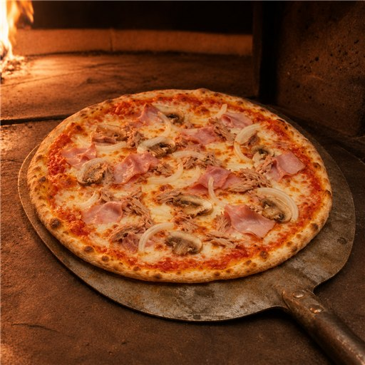Pizza · Nr. 12ValentinoThunfisch, Form-Vorderschinken, Champignons, ZwiebelnJPG · 512 px Original PNG
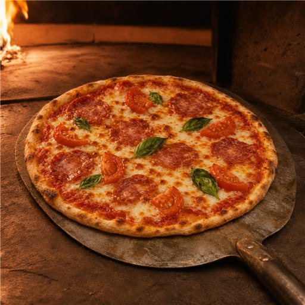Pizza · Nr. 13CalabreseOriginal italienische Salami, frische Tomaten, Mozzarella, BasilikumJPG · 512 px Original PNG
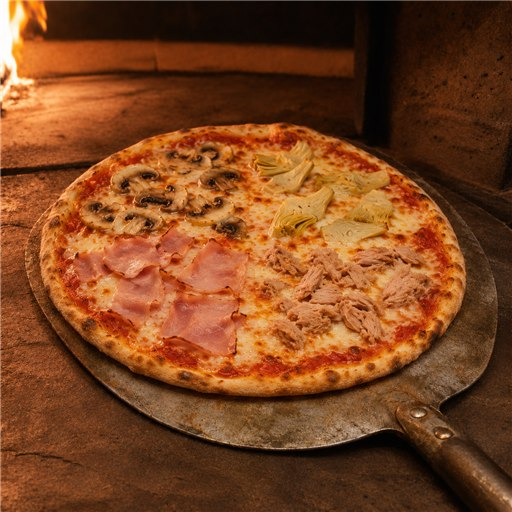Pizza · Nr. 164 StagioniForm-Vorderschinken, Champignons, Thunfisch, ArtischockenJPG · 512 px Original PNG
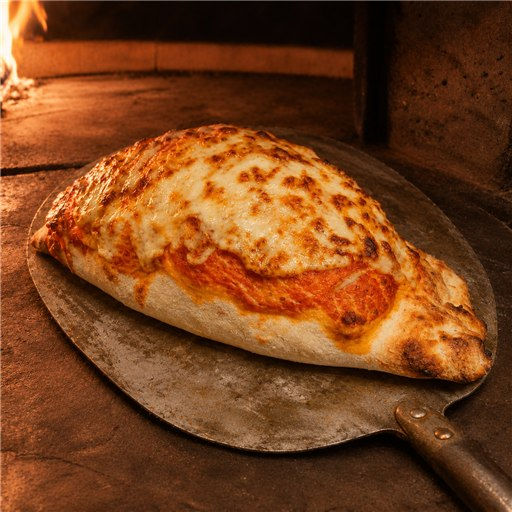Pizza · Nr. 21CalzoneThunfisch, Form-Vorderschinken, ChampignonsJPG · 512 px Original PNG
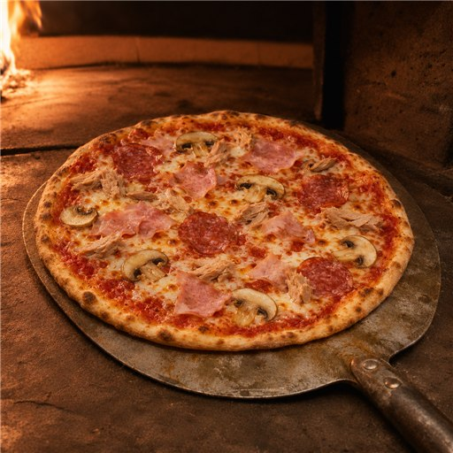Pizza · Nr. 26CapricciosaThunfisch, Form-Vorderschinken, Champignons, SalamiJPG · 512 px Original PNG
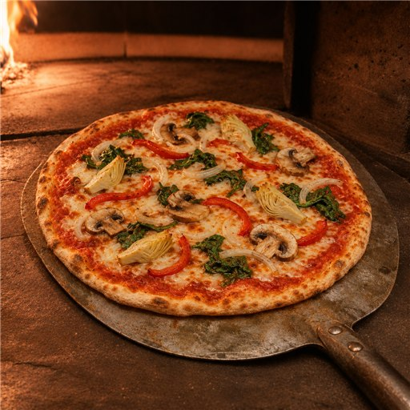Pizza · Nr. 27Pizza VaranoSpinat, Champignons, Zwiebeln, Paprika, ArtischockenJPG · 512 px Original PNG
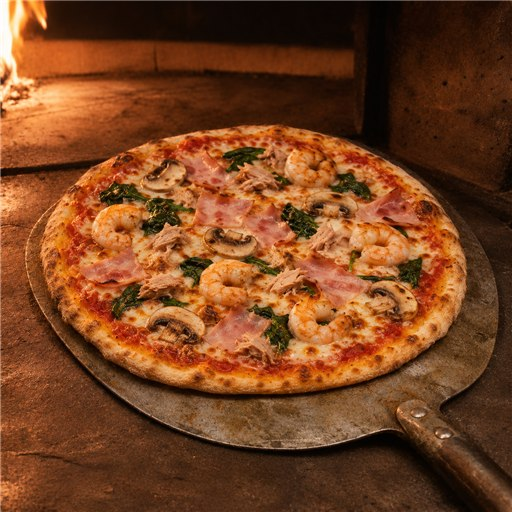Pizza · Nr. 28Pizza RegataSpinat, Thunfisch, Form-Vorderschinken, Shrimps, ChampignonsJPG · 512 px Original PNG
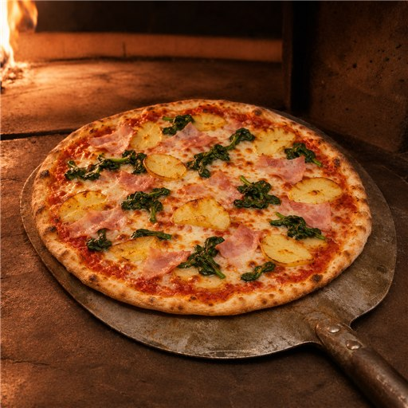Pizza · Nr. 32Pizza PatataSpinat, Form-Vorderschinken, KartoffelnJPG · 512 px Original PNG
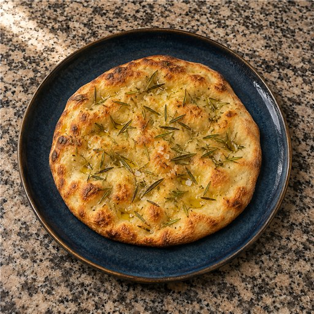Antipasti · Nr. 34Focaccia al RosmarinoHausgemachtes Brot mit RosmarineJPG · 512 px Original PNG
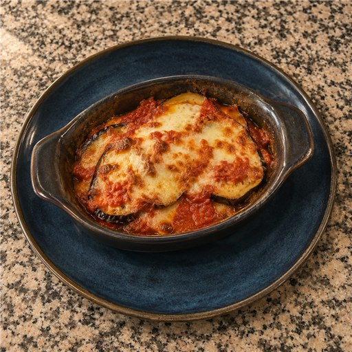Antipasti · Nr. 35Melanzane ParmigianaÜberbackene Auberginen mit Tomaten und MozzarellaJPG · 512 px Original PNG
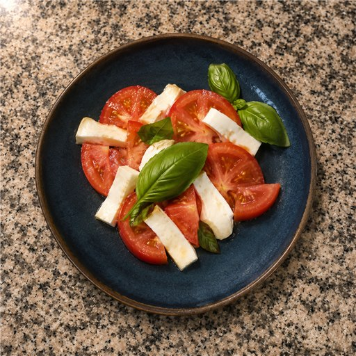Antipasti · Nr. 37Inslata CapreseFrische Tomatenscheiben, Mozzarella und BasilikumJPG · 512 px Original PNG
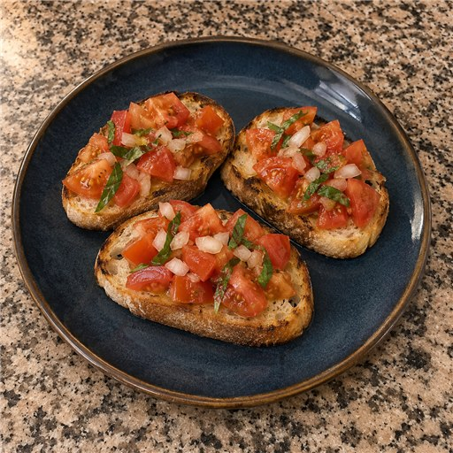Antipasti · Nr. 38BruschettaFrische Tomatenstücke, Basilikum, Zwiebeln, OlivenölJPG · 512 px Original PNG
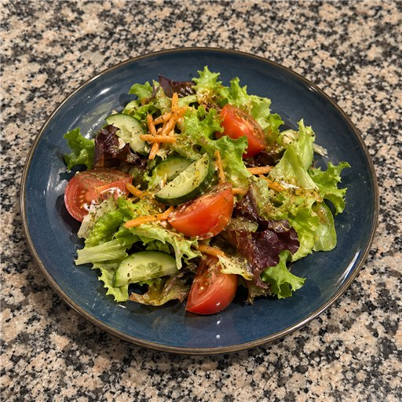Insalate · Nr. 39Insalata MistaGemischter Salat der Saison mit Italian DressingJPG · 512 px Original PNG
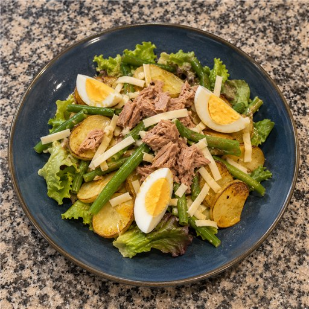Insalate · Nr. 40Insalata NicoiseSalat, Kartoffeln, Bohnen, Thunfisch, Ei, KäseJPG · 512 px Original PNG
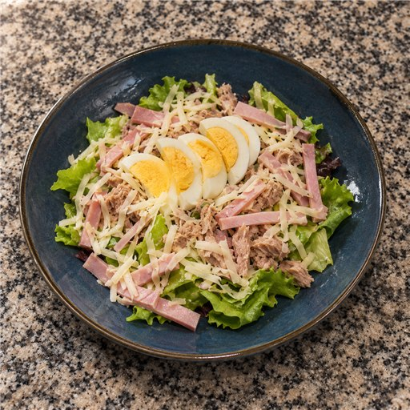Insalate · Nr. 41CapricciosaSalat, Form-Vorderschinken, Thunfisch, Ei, KäseJPG · 512 px Original PNG
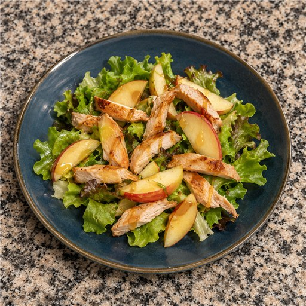Insalate · Nr. 42Puten SalatPutenbruststreifen und Apfelspalten mit HonigJPG · 512 px Original PNG
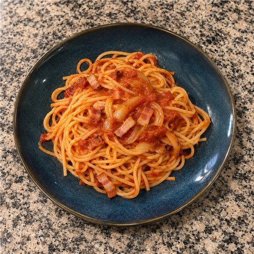Pasta · Nr. 45Spaghetti a MatricianaTomatensoße, Speck, ZwiebelnJPG · 512 px Original PNG
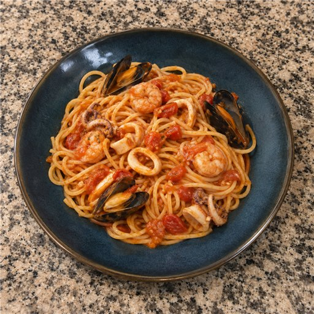Pasta · Nr. 46Spaghetti Frutti di MareTomatensoße, Knoblauch und MeeresfrüchtenJPG · 512 px Original PNG
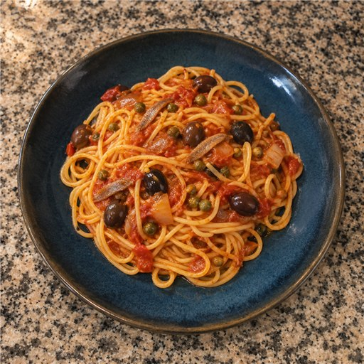Pasta · Nr. 47Spaghetti alla PuttanescaOliven, Kapern, Zwiebeln und Sardellen in TomatensoßeJPG · 512 px Original PNG
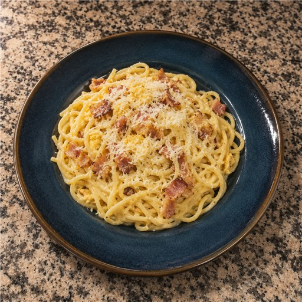Pasta · Nr. 48Spaghetti CarbonaraSahnesoße, Speck, Eier, ParmesanJPG · 512 px Original PNG
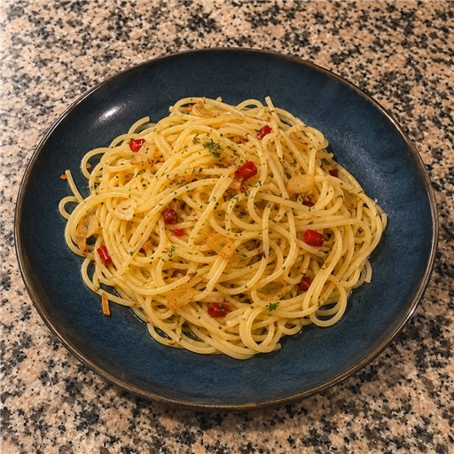Pasta · Nr. 49Spaghetti Aglio, Olio e Peperocinomit Knoblauch, Olivenöl, Peperoni scharfJPG · 512 px Original PNG
Pasta · Nr. 50Spaghetti Pestomit Basilikum, Pinienkerne, Knoblauch, KräutersoßeJPG · 512 px Original PNG
Penne · Nr. 53Penne PuteTomaten-Sahnesoße, mit Putenstreifen und Gemüse nach WahlJPG · 512 px Original PNG
Penne · Nr. 54Penne al FornoHackfleisch-Sahnesoße, Form-Vorderschinken, Käse überbackenJPG · 512 px Original PNG
Tagliatelle · Nr. 58Tagliatelle AlfredoSahnesoße, Form-Vorderschinken, ChampignonsJPG · 512 px Original PNG
Tagliatelle · Nr. 60Tagliatelle Mari e MontiTomaten-Sahnesoße, Scampi, ChampignonsJPG · 512 px Original PNG
Tortellini · Nr. 63Tortellini al FornoBolognese-Sahnesoße, Form-Vorderschinken und Käse überbackenJPG · 512 px Original PNG
Tortellini · Nr. 64Tortellini alla PannaSahnesoße, Form-Vorderschinken und ParmesanJPG · 512 px Original PNG
Tortellini · Nr. 66Tortellini alla BoscaiolaTomaten-Sahnesoße, Schinken, Champignons, SpinatJPG · 512 px Original PNG
Gnocchi · Nr. 67Gnocchi alla GorgonzolaGorgonzola in Sahnesoße, Käse überbackenJPG · 512 px Original PNG
Gnocchi · Nr. 70Gnocchi alla SorrentinaTomatensoße, Mozzarella und Basilikum PestoJPG · 512 px Original PNG
Gnocchi · Nr. 72Pasticcio al Forno “Brooklin”Tomaten-Sahnesoße, Penne mit Brokkoli und Käse überbackenJPG · 512 px Original PNG